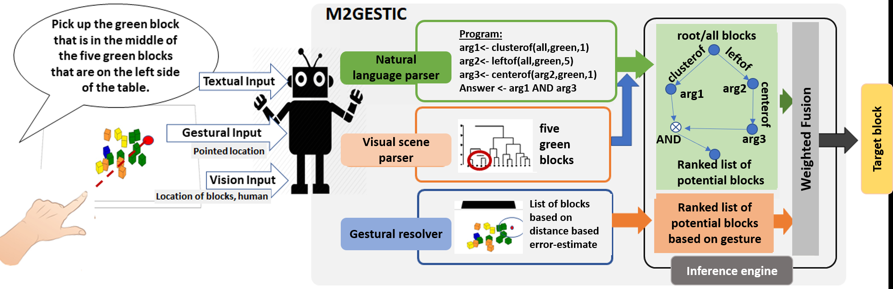
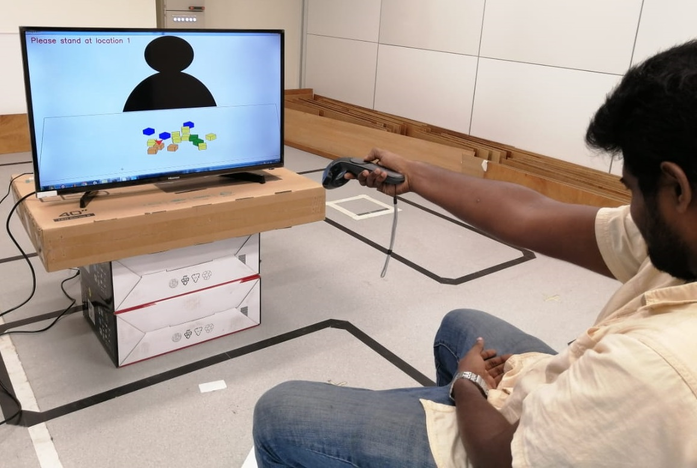
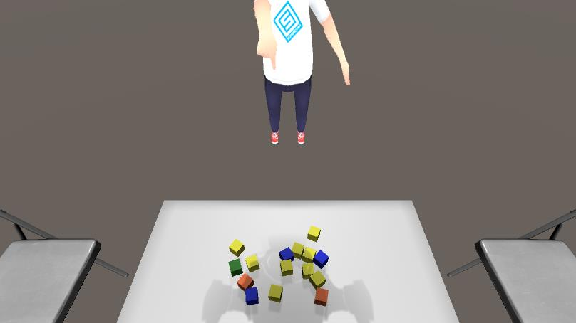
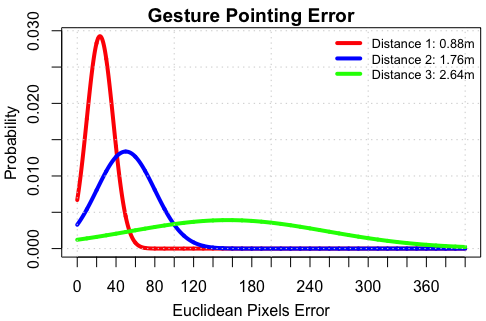

Human–robot interaction · Singapore University of Technology and Design · Jul 2019 – May 2020
When words need
a pointing gesture.
Gesture Enhanced Comprehension of Ambiguous Human-to-Robot Instructions
SUTD · A*STAR · Singapore Management University · ACM ICMI 2020
In a cluttered scene, a verbal description can match more than one object. M2Gestic investigates how visual context, natural-language instructions, and pointing can work together to identify the intended target—even when the pointing location is uncertain.

My contribution
I designed an HTC Vive-based multimodal interface integrating pointing gestures and natural language for collaborative human–robot tasks, and assisted in experimental studies evaluating gesture-enhanced instruction comprehension.
Technologies: Unity, HTC Vive, Python, and Figma.
Research problem
Which object does the instruction mean?
Objects may share colours, shapes, or spatial relationships. Descriptions involving “left” or “behind” may also depend on perspective. Pointing provides another spatial cue, but human pointing is not perfectly precise.
The research challenge is to combine the available cues while accounting for uncertainty, rather than treating the pointed position as an exact target.
The team’s system
Three inputs, one target-selection decision
Visual scene
Represent object attributes and spatial relationships in the tabletop scene.
Language
Parse the instruction into machine-understandable references and relationships.
Pointing
Use the estimated pointing location and its uncertainty to rank candidate objects.
M2Gestic combines neural-based text parsing with knowledge-graph traversal and multimodal inference. The inference method is a team research contribution; my role focused on the interaction interface and supporting studies.
Explore the interface & study setupHTC Vive pointing · Unity tabletop scenes · uncertainty
Capturing pointing input
The pointing study used a calibrated HTC Vive setup to record the intended location on a screen displaying tabletop block arrangements. Participants pointed from three distances: 88 cm, 176 cm, and 264 cm. The study characterised how pointing error changed with distance.

Presenting the task in Unity
A Unity 3D environment recreated 28 tabletop block arrangements. To study comprehension from the receiving agent’s perspective, the scene was transformed to show the objects and the instructor’s pointing gesture from across the table.

Accounting for uncertainty
The study found that pointing error increased with distance. The system uses this uncertainty when combining pointing and verbal cues. At greater distances, a gesture can become less useful and should receive less weight.

Published findings
Pointing helps when the words are ambiguous
M2Gestic target-selection accuracy for ambiguous instructions, comparing text-only input with gesture-enhanced input at 88 cm. This is a gain of 31.47 percentage points.
For unambiguous instructions, the text-and-scene system achieved accuracy close to the human baseline. The additional value of pointing depended on its precision: the gain was smaller at 176 cm, while at 264 cm the best-performing configuration ignored pointing and reverted to the text-only baseline.
The findings concern benchmark tabletop target selection. They do not demonstrate end-to-end physical robot manipulation or unrestricted conversational understanding.
Design takeaway
Let people communicate with more than words.
This project connects embodied interaction with instruction comprehension. It highlights the importance of designing interfaces that capture natural spatial cues while recognising that those cues can be uncertain.
Publication & credits
Dulanga Weerakoon, Vigneshwaran Subbaraju, Nipuni Karumpulli, Tuan Tran, Qianli Xu, U-Xuan Tan, Joo Hwee Lim, and Archan Misra. 2020. Gesture Enhanced Comprehension of Ambiguous Human-to-Robot Instructions. ICMI ’20. DOI: 10.1145/3382507.3418863.
Paper figures are credited to Weerakoon et al. (2020).